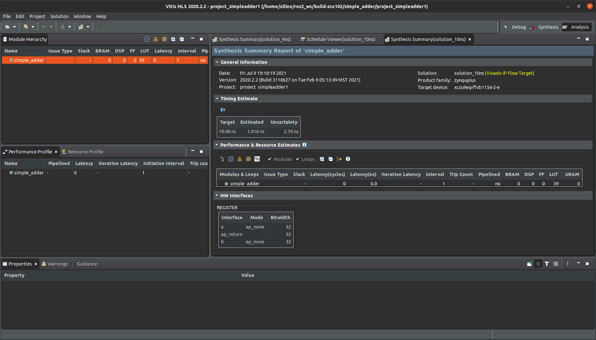
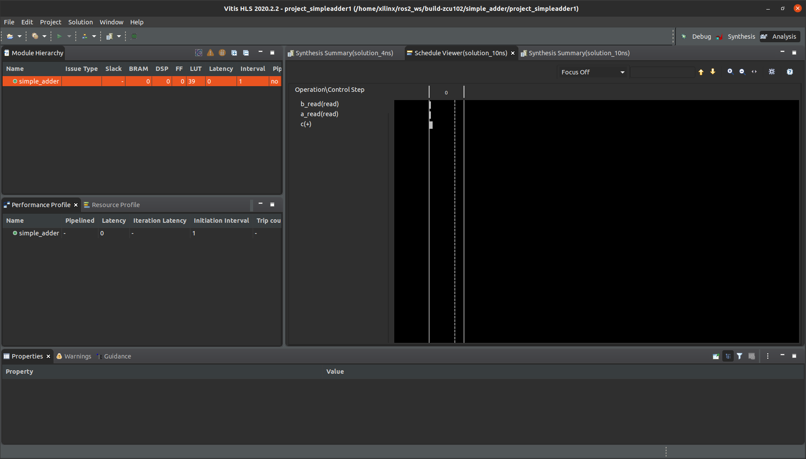
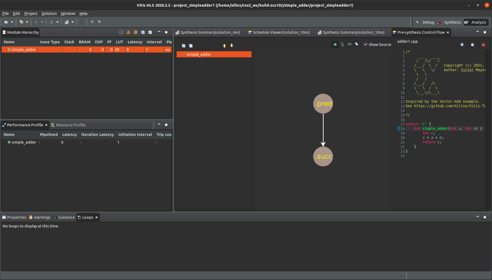
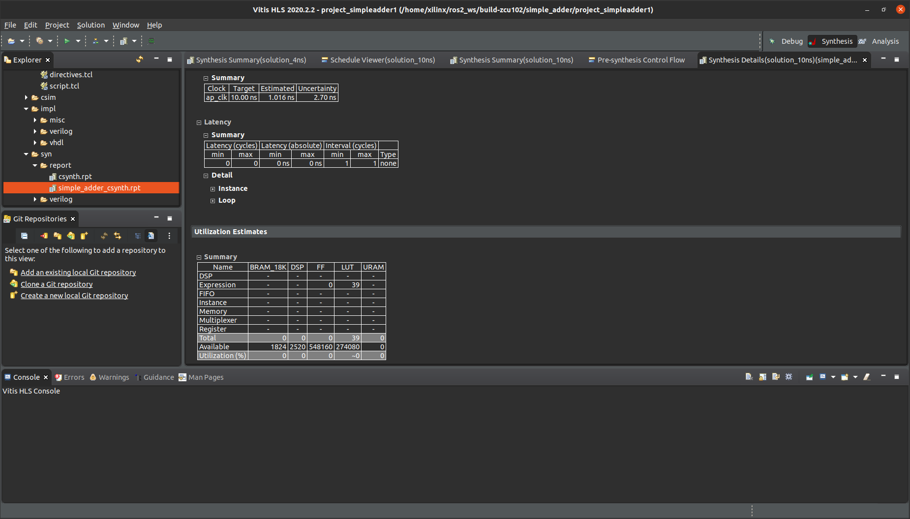
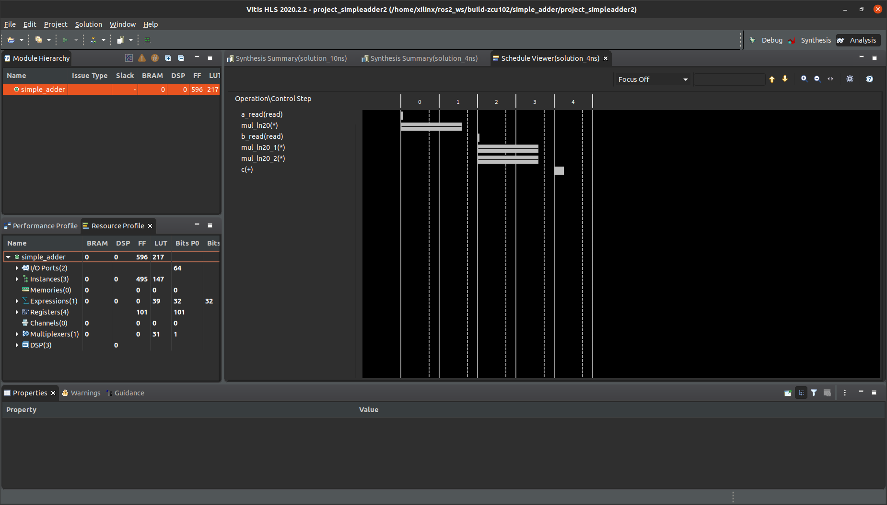
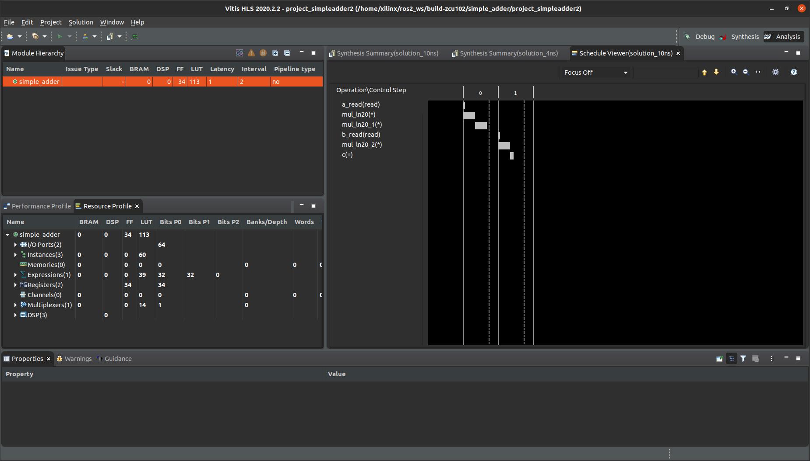

2. HLS in ROS 2¶
| Source code | |
|---|---|
simple_adder |
|
| adder1 | |
| kernel 1 | adder1.cpp |
| testbench 1 | testbench1.cpp |
| adder2 | |
| kernel 2 | adder2.cpp |
| testbench 2 | testbench2.cpp |
HLS is at the core of C++ hardware acceleration. KRS allows to maintain a ROS 2-centric view while leveraging HLS, optimizing the flow and empowering roboticists toperform everything from the CLI, attaching nicely to the ROS 2 meta build system (ament) and the ROS 2 meta build tools (colcon).
This example demonstrates how KRS helps to transition from the Xilinx’s Vitis-centric flow to the ROS 2 flow. The source code performs a trivial add operation. HLS is used directly from the ROS 2 CLI build tools. We explore the possiblities of offloading this operation to the Programmable Logic (PL). The latencies derived from the offloading operation are then analyzed both with the ROS 2 CLI tooling, and later, with the Vitis HLS GUI.
Though we’ll be targeting KV260 hardware platform, no physical hardware is needed for this example.
Important
The examples assume you’ve already installed KRS. If not, refer to install.
Note
Learn ROS 2 before trying this out first.
Prepare the environment and fetch the example¶
$ cd ~/krs_ws # head to your KRS workspace
# prepare the environment
$ source /tools/Xilinx/Vitis/2022.1/settings64.sh # source Xilinx tools
$ source /opt/ros/humble/setup.bash # Sources system ROS 2 installation
$ export PATH="/usr/bin":$PATH # FIXME: adjust path for CMake 3.5+
# build the workspace
$ colcon build --merge-install # about 2 mins
# source the workspace as an overlay
$ source install/setup.bash
A bit of background on HLS, RTL and FPGAs¶
About C simulation
HLS C Simulation performs a pre-synthesis validation and checks that that the C program correctly implements the required functionality. This allows you to compile, simulate, and debug the C/C++ algorithm. C simulation allows for the function to be synthesized (e.g. simple_adder above) to be validated with a test bench using C simulation. A C test bench includes a main() top-level function, that calls the function to be synthesized by the Vitis HLS project. The test bench can also include other functions.
Refer to Verifying Code with C Simulation for more.
About Synthesis
Synthesis transforms the C or C++ function into RTL code for acceleration in programmable logic. HLS allows you to control synthesis process using optimization pragmas to create high-performance implementations.
Refer to Synthesizing the Code for more.
A further understanding of the synthesis summary view
The synthesis summary view provides lots of information with different fields which may not always be self-explanatory. The list below tries to clarify some of the most relevant ones:
Slack: displays any timing issues in the implementation.
Latency(cycles)/Latency(ns): displays the number of cycles it takes to produce the output. The same information is also displayed in ns.
Iteration Latency: latency of a single iteration for a loop.
Interval: Interval or Initiation Interval (II) is the number of clock cycles before new inputs can be applied.
Trip Count: displays the number of iterations of a specific loop in the implemented hardware. This reflects any unrolling of the loop in hardware.
A quick review of the resources in an FPGA
Xilinx FPGA designs contain the following core components: Configurable Logic Blocks (CLBs), Programmable Routing Blocks (PRBs), I/O Blocks (IOBs) and Digital Signal Processors (DSPs). Within CLBs we have 4 sub-components: Flip-flops (FFs), Loop-up-tables (LUTs), multiplexers (MUXs) and SRAM.
When accounting for resources consumed, we focus particularly on the following which are further defined below:
DSP: DSPs have been optimized to implement various common digital signal processing functions with maximum performance and minimum logic resource utilization. They have functions to provide multipliers, adders, substractors, accumulators, coefficient register storage or a summation unit, amongst others.
FF: they are the smallest storage resource on the FPGA and each FF within a CLB is a binary register used to save logic states between clock cycles on an FPGA circuit.
LUT: stores a predefined list of outputs for every combination of inputs. LUTs provide a fast way to retrieve the output of a logic operation because possible results are stored and then referenced, rather than calculated.
URAM: UltraRAM is a large, lightweight memory block intended to allow the replacement of off-board memories enabling better overall performance.
simple_adder1: a quick look into the flow¶
simple_adder is pretty straightforward:
int simple_adder(int a, int b) {
int c;
c = a + b;
return c;
}
We can build this example packaged as a ROS package (though it doesn’t interact with the computational graph) as follows:
$ colcon acceleration select kv260 # select the KV260 firmware
$ colcon build --merge-install --build-base=build-kv260 --install-base=install-kv260 --mixin kv260 --packages-select simple_adder
The simple_adder package uses the vitis_hls_generate_tcl macro on its CMakeLists.txt. This macro commands the build system (ament) that when the package is built it should generate a Tcl script for simple_adder. This Tcl script will allow architects with HLS experience to use the traditional HLS interface to further optimize and investigate the kernel through C simulation, synthesis, RTL simulation, etc.
Here’s a peek to the macro syntax used:
vitis_hls_generate_tcl(
PROJECT
project_simpleadder1
SRC
src/adder1.cpp
HEADERS
include
TESTBENCH
src/testbench.cpp
TOPFUNCTION
simple_adder
CLOCK
4
SYNTHESIS
)
??? note “The Xilinx Tcl traditional path”
When using the `vitis_hls_generate_tcl` macro above, a script is automatically generated under `~/krs_ws/build-kv60/simple_adder/project_simpleadder1.tcl`:
```
open_project -reset project_simpleadder1
add_files /home/xilinx/ros2_ws/src/xilinx/xilinx_examples/simple_adder/src/adder1.cpp
add_files -tb /home/xilinx/ros2_ws/src/xilinx/xilinx_examples/simple_adder/src/testbench.cpp -cflags "-isystem /home/xilinx/ros2_ws/src/xilinx/xilinx_examples/simple_adder/include"
set_top simple_adder
# solution_4ns
open_solution solution_4ns
set_part {xczu9eg-ffvb1156-2-e}
create_clock -period 4
csim_design -ldflags "-lOpenCL" -profile
csynth_design
# solution_10ns
open_solution solution_10ns
set_part {xczu9eg-ffvb1156-2-e}
create_clock -period 10
csim_design -ldflags "-lOpenCL" -profile
csynth_design
exit
```
The resulting Tcl script can directly be launched with `vitis_hls -f <file-name>` allowing to perform C simulation and synthesis (in this particular case).
```bash
$ vitis_hls -f project_simpleadder1.tcl
****** Vitis HLS - High-Level Synthesis from C, C++ and OpenCL v2020.2.2 (64-bit)
**** SW Build 3118627 on Tue Feb 9 05:13:49 MST 2021
**** IP Build 3115676 on Tue Feb 9 10:48:11 MST 2021
** Copyright 1986-2021 Xilinx, Inc. All Rights Reserved.
source /tools/Xilinx/Vitis_HLS/2020.2/scripts/vitis_hls/hls.tcl -notrace
INFO: [HLS 200-10] Running '/tools/Xilinx/Vitis_HLS/2020.2/bin/unwrapped/lnx64.o/vitis_hls'
INFO: [HLS 200-10] For user 'xilinx' on host 'xilinx' (Linux_x86_64 version 5.10.37-rt39-tsn-measurements) on Sat Jul 10 07:39:11 CEST 2021
INFO: [HLS 200-10] On os Ubuntu 20.04.2 LTS
INFO: [HLS 200-10] In directory '/home/xilinx/ros2_ws/build-zcu102/simple_adder'
Sourcing Tcl script 'project_simpleadder1.tcl'
INFO: [HLS 200-1510] Running: open_project -reset project_simpleadder1
INFO: [HLS 200-10] Opening and resetting project '/home/xilinx/ros2_ws/build-zcu102/simple_adder/project_simpleadder1'.
WARNING: [HLS 200-40] No /home/xilinx/ros2_ws/build-zcu102/simple_adder/project_simpleadder1/solution_4ns/solution_4ns.aps file found.
WARNING: [HLS 200-40] No /home/xilinx/ros2_ws/build-zcu102/simple_adder/project_simpleadder1/solution_10ns/solution_10ns.aps file found.
INFO: [HLS 200-1510] Running: add_files /home/xilinx/ros2_ws/src/xilinx/xilinx_examples/simple_adder/src/adder1.cpp
INFO: [HLS 200-10] Adding design file '/home/xilinx/ros2_ws/src/xilinx/xilinx_examples/simple_adder/src/adder1.cpp' to the project
INFO: [HLS 200-1510] Running: add_files -tb /home/xilinx/ros2_ws/src/xilinx/xilinx_examples/simple_adder/src/testbench.cpp -cflags -isystem /home/xilinx/ros2_ws/src/xilinx/xilinx_examples/simple_adder/include
INFO: [HLS 200-10] Adding test bench file '/home/xilinx/ros2_ws/src/xilinx/xilinx_examples/simple_adder/src/testbench.cpp' to the project
INFO: [HLS 200-1510] Running: set_top simple_adder
INFO: [HLS 200-1510] Running: open_solution solution_4ns
INFO: [HLS 200-10] Creating and opening solution '/home/xilinx/ros2_ws/build-zcu102/simple_adder/project_simpleadder1/solution_4ns'.
INFO: [HLS 200-1505] Using default flow_target 'vivado'
Resolution: For help on HLS 200-1505 see www.xilinx.com/cgi-bin/docs/rdoc?v=2020.2;t=hls+guidance;d=200-1505.html
INFO: [HLS 200-1510] Running: set_part xczu9eg-ffvb1156-2-e
INFO: [HLS 200-10] Setting target device to 'xczu9eg-ffvb1156-2-e'
INFO: [HLS 200-1510] Running: create_clock -period 4
INFO: [SYN 201-201] Setting up clock 'default' with a period of 4ns.
INFO: [HLS 200-1510] Running: csim_design -ldflags -lOpenCL -profile
INFO: [SIM 211-2] *************** CSIM start ***************
INFO: [SIM 211-4] CSIM will launch CLANG as the compiler.
Compiling ../../../../../../src/xilinx/xilinx_examples/simple_adder/src/testbench.cpp in debug mode
Compiling ../../../../../../src/xilinx/xilinx_examples/simple_adder/src/adder1.cpp in debug mode
Generating csim.exe
Expected result: 100, Got Result: 100
Expected result: 103, Got Result: 103
Expected result: 106, Got Result: 106
Expected result: 109, Got Result: 109
Expected result: 112, Got Result: 112
Expected result: 115, Got Result: 115
Expected result: 118, Got Result: 118
Expected result: 121, Got Result: 121
Expected result: 124, Got Result: 124
Expected result: 127, Got Result: 127
Generating dot files
INFO: [SIM 211-1] CSim done with 0 errors.
INFO: [SIM 211-3] *************** CSIM finish ***************
INFO: [HLS 200-111] Finished Command csim_design CPU user time: 0.65 seconds. CPU system time: 0.31 seconds. Elapsed time: 0.8 seconds; current allocated memory: 195.056 MB.
INFO: [HLS 200-1510] Running: csynth_design
INFO: [HLS 200-111] Finished File checks and directory preparation: CPU user time: 0 seconds. CPU system time: 0 seconds. Elapsed time: 0 seconds; current allocated memory: 195.260 MB.
INFO: [HLS 200-10] Analyzing design file '/home/xilinx/ros2_ws/src/xilinx/xilinx_examples/simple_adder/src/adder1.cpp' ...
INFO: [HLS 200-111] Finished Source Code Analysis and Preprocessing: CPU user time: 0.13 seconds. CPU system time: 0.09 seconds. Elapsed time: 0.23 seconds; current allocated memory: 195.911 MB.
INFO: [HLS 200-777] Using interface defaults for 'Vivado' flow target.
INFO: [HLS 200-111] Finished Compiling Optimization and Transform: CPU user time: 2.84 seconds. CPU system time: 0.26 seconds. Elapsed time: 3.23 seconds; current allocated memory: 196.203 MB.
INFO: [HLS 200-111] Finished Checking Pragmas: CPU user time: 0 seconds. CPU system time: 0 seconds. Elapsed time: 0 seconds; current allocated memory: 196.220 MB.
INFO: [HLS 200-10] Starting code transformations ...
INFO: [HLS 200-111] Finished Standard Transforms: CPU user time: 0.01 seconds. CPU system time: 0 seconds. Elapsed time: 0.01 seconds; current allocated memory: 197.187 MB.
INFO: [HLS 200-10] Checking synthesizability ...
INFO: [HLS 200-111] Finished Checking Synthesizability: CPU user time: 0.01 seconds. CPU system time: 0 seconds. Elapsed time: 0.01 seconds; current allocated memory: 196.621 MB.
INFO: [HLS 200-111] Finished Loop, function and other optimizations: CPU user time: 0.03 seconds. CPU system time: 0.01 seconds. Elapsed time: 0.04 seconds; current allocated memory: 216.648 MB.
INFO: [HLS 200-111] Finished Architecture Synthesis: CPU user time: 0.02 seconds. CPU system time: 0 seconds. Elapsed time: 0.02 seconds; current allocated memory: 208.313 MB.
INFO: [HLS 200-10] Starting hardware synthesis ...
INFO: [HLS 200-10] Synthesizing 'simple_adder' ...
INFO: [HLS 200-10] ----------------------------------------------------------------
INFO: [HLS 200-42] -- Implementing module 'simple_adder'
INFO: [HLS 200-10] ----------------------------------------------------------------
INFO: [SCHED 204-11] Starting scheduling ...
INFO: [SCHED 204-11] Finished scheduling.
INFO: [HLS 200-111] Finished Scheduling: CPU user time: 0.01 seconds. CPU system time: 0 seconds. Elapsed time: 0.02 seconds; current allocated memory: 208.520 MB.
INFO: [BIND 205-100] Starting micro-architecture generation ...
INFO: [BIND 205-101] Performing variable lifetime analysis.
INFO: [BIND 205-101] Exploring resource sharing.
INFO: [BIND 205-101] Binding ...
INFO: [BIND 205-100] Finished micro-architecture generation.
INFO: [HLS 200-111] Finished Binding: CPU user time: 0.01 seconds. CPU system time: 0 seconds. Elapsed time: 0.01 seconds; current allocated memory: 208.601 MB.
INFO: [HLS 200-10] ----------------------------------------------------------------
INFO: [HLS 200-10] -- Generating RTL for module 'simple_adder'
INFO: [HLS 200-10] ----------------------------------------------------------------
INFO: [RTGEN 206-500] Setting interface mode on port 'simple_adder/a' to 'ap_none'.
INFO: [RTGEN 206-500] Setting interface mode on port 'simple_adder/b' to 'ap_none'.
INFO: [RTGEN 206-500] Setting interface mode on function 'simple_adder' to 'ap_ctrl_hs'.
INFO: [RTGEN 206-100] Finished creating RTL model for 'simple_adder'.
INFO: [HLS 200-111] Finished Creating RTL model: CPU user time: 0.01 seconds. CPU system time: 0.01 seconds. Elapsed time: 0.01 seconds; current allocated memory: 208.723 MB.
INFO: [HLS 200-111] Finished Generating all RTL models: CPU user time: 0.8 seconds. CPU system time: 0.01 seconds. Elapsed time: 0.82 seconds; current allocated memory: 214.826 MB.
INFO: [VHDL 208-304] Generating VHDL RTL for simple_adder.
INFO: [VLOG 209-307] Generating Verilog RTL for simple_adder.
INFO: [HLS 200-789] **** Estimated Fmax: 984.25 MHz
INFO: [HLS 200-111] Finished Command csynth_design CPU user time: 3.9 seconds. CPU system time: 0.38 seconds. Elapsed time: 4.43 seconds; current allocated memory: 215.042 MB.
INFO: [HLS 200-1510] Running: open_solution solution_10ns
INFO: [HLS 200-10] Creating and opening solution '/home/xilinx/ros2_ws/build-zcu102/simple_adder/project_simpleadder1/solution_10ns'.
INFO: [HLS 200-1505] Using default flow_target 'vivado'
Resolution: For help on HLS 200-1505 see www.xilinx.com/cgi-bin/docs/rdoc?v=2020.2;t=hls+guidance;d=200-1505.html
INFO: [HLS 200-1510] Running: set_part xczu9eg-ffvb1156-2-e
INFO: [HLS 200-1510] Running: create_clock -period 10
INFO: [SYN 201-201] Setting up clock 'default' with a period of 10ns.
INFO: [HLS 200-1510] Running: csim_design -ldflags -lOpenCL -profile
INFO: [SIM 211-2] *************** CSIM start ***************
INFO: [SIM 211-4] CSIM will launch CLANG as the compiler.
Compiling ../../../../../../src/xilinx/xilinx_examples/simple_adder/src/testbench.cpp in debug mode
Compiling ../../../../../../src/xilinx/xilinx_examples/simple_adder/src/adder1.cpp in debug mode
Generating csim.exe
Expected result: 100, Got Result: 100
Expected result: 103, Got Result: 103
Expected result: 106, Got Result: 106
Expected result: 109, Got Result: 109
Expected result: 112, Got Result: 112
Expected result: 115, Got Result: 115
Expected result: 118, Got Result: 118
Expected result: 121, Got Result: 121
Expected result: 124, Got Result: 124
Expected result: 127, Got Result: 127
Generating dot files
INFO: [SIM 211-1] CSim done with 0 errors.
INFO: [SIM 211-3] *************** CSIM finish ***************
INFO: [HLS 200-111] Finished Command csim_design CPU user time: 0.45 seconds. CPU system time: 0.25 seconds. Elapsed time: 0.71 seconds; current allocated memory: 204.178 MB.
INFO: [HLS 200-1510] Running: csynth_design
INFO: [HLS 200-111] Finished File checks and directory preparation: CPU user time: 0.01 seconds. CPU system time: 0 seconds. Elapsed time: 0.01 seconds; current allocated memory: 204.280 MB.
INFO: [HLS 200-10] Analyzing design file '/home/xilinx/ros2_ws/src/xilinx/xilinx_examples/simple_adder/src/adder1.cpp' ...
INFO: [HLS 200-111] Finished Source Code Analysis and Preprocessing: CPU user time: 0.12 seconds. CPU system time: 0.1 seconds. Elapsed time: 0.23 seconds; current allocated memory: 204.290 MB.
INFO: [HLS 200-777] Using interface defaults for 'Vivado' flow target.
INFO: [HLS 200-111] Finished Compiling Optimization and Transform: CPU user time: 2.96 seconds. CPU system time: 0.28 seconds. Elapsed time: 3.41 seconds; current allocated memory: 204.363 MB.
INFO: [HLS 200-111] Finished Checking Pragmas: CPU user time: 0 seconds. CPU system time: 0 seconds. Elapsed time: 0 seconds; current allocated memory: 204.364 MB.
INFO: [HLS 200-10] Starting code transformations ...
INFO: [HLS 200-111] Finished Standard Transforms: CPU user time: 0 seconds. CPU system time: 0 seconds. Elapsed time: 0 seconds; current allocated memory: 205.081 MB.
INFO: [HLS 200-10] Checking synthesizability ...
INFO: [HLS 200-111] Finished Checking Synthesizability: CPU user time: 0.01 seconds. CPU system time: 0 seconds. Elapsed time: 0.01 seconds; current allocated memory: 204.483 MB.
INFO: [HLS 200-111] Finished Loop, function and other optimizations: CPU user time: 0.04 seconds. CPU system time: 0.01 seconds. Elapsed time: 0.04 seconds; current allocated memory: 224.451 MB.
INFO: [HLS 200-111] Finished Architecture Synthesis: CPU user time: 0.01 seconds. CPU system time: 0 seconds. Elapsed time: 0.02 seconds; current allocated memory: 216.047 MB.
INFO: [HLS 200-10] Starting hardware synthesis ...
INFO: [HLS 200-10] Synthesizing 'simple_adder' ...
INFO: [HLS 200-10] ----------------------------------------------------------------
INFO: [HLS 200-42] -- Implementing module 'simple_adder'
INFO: [HLS 200-10] ----------------------------------------------------------------
INFO: [SCHED 204-11] Starting scheduling ...
INFO: [SCHED 204-11] Finished scheduling.
INFO: [HLS 200-111] Finished Scheduling: CPU user time: 0.01 seconds. CPU system time: 0 seconds. Elapsed time: 0.02 seconds; current allocated memory: 216.082 MB.
INFO: [BIND 205-100] Starting micro-architecture generation ...
INFO: [BIND 205-101] Performing variable lifetime analysis.
INFO: [BIND 205-101] Exploring resource sharing.
INFO: [BIND 205-101] Binding ...
INFO: [BIND 205-100] Finished micro-architecture generation.
INFO: [HLS 200-111] Finished Binding: CPU user time: 0.01 seconds. CPU system time: 0 seconds. Elapsed time: 0.01 seconds; current allocated memory: 216.140 MB.
INFO: [HLS 200-10] ----------------------------------------------------------------
INFO: [HLS 200-10] -- Generating RTL for module 'simple_adder'
INFO: [HLS 200-10] ----------------------------------------------------------------
INFO: [RTGEN 206-500] Setting interface mode on port 'simple_adder/a' to 'ap_none'.
INFO: [RTGEN 206-500] Setting interface mode on port 'simple_adder/b' to 'ap_none'.
INFO: [RTGEN 206-500] Setting interface mode on function 'simple_adder' to 'ap_ctrl_hs'.
INFO: [RTGEN 206-100] Finished creating RTL model for 'simple_add<er'.
INFO: [HLS 200-111] Finished Creating RTL model: CPU user time: 0.01 seconds. CPU system time: 0 seconds. Elapsed time: 0.01 seconds; current allocated memory: 216.195 MB.
INFO: [HLS 200-111] Finished Generating all RTL models: CPU user time: 0.75 seconds. CPU system time: 0.02 seconds. Elapsed time: 0.77 seconds; current allocated memory: 216.821 MB.
INFO: [VHDL 208-304] Generating VHDL RTL for simple_adder.
INFO: [VLOG 209-307] Generating Verilog RTL for simple_adder.
INFO: [HLS 200-789] **** Estimated Fmax: 984.25 MHz
INFO: [HLS 200-111] Finished Command csynth_design CPU user time: 3.96 seconds. CPU system time: 0.41 seconds. Elapsed time: 4.57 seconds; current allocated memory: 216.911 MB.
INFO: [HLS 200-112] Total CPU user time: 11.55 seconds. Total CPU system time: 1.84 seconds. Total elapsed time: 12.47 seconds; peak allocated memory: 224.451 MB.
INFO: [Common 17-206] Exiting vitis_hls at Sat Jul 10 07:39:24 2021...
```
With KRS, we can avoid using Tcl and use instead the ROS 2 extensions to colcon to easily perform C simulation, synthesis, implementation and more. Before running things, ROS 2 tools will dump the following status:
$ colcon acceleration hls simple_adder
Project: project_simpleadder2
Path: /home/xilinx/krs_ws/build-kv260/simple_adder/project_simpleadder2
- Solution: solution_4ns
- C Simulation: Not Run
- C Synthesis: Not Run
- C/RTL Co-simulation: Not Run
- Export:
- IP Catalog: Not Run
- System Generator: Not Run
- Export Evaluation: Not Run
- Solution: solution_10ns
- C Simulation: Not Run
- C Synthesis: Not Run
- C/RTL Co-simulation: Not Run
- Export:
- IP Catalog: Not Run
- System Generator: Not Run
- Export Evaluation: Not Run
Project: project_simpleadder1
Path: /home/xilinx/krs_ws/build-kv260/simple_adder/project_simpleadder1
- Solution: solution_4ns
- C Simulation: Not Run
- C Synthesis: Not Run
- C/RTL Co-simulation: Not Run
- Export:
- IP Catalog: Not Run
- System Generator: Not Run
- Export Evaluation: Not Run
Let’s run it and get some results:
$ colcon acceleration hls simple_adder --run
Found Tcl script "project_simpleadder2.tcl" for package: simple_adder
Executing /home/xilinx/krs_ws/build-kv260/simple_adder/project_simpleadder2.tcl
Found Tcl script "project_simpleadder1.tcl" for package: simple_adder
Executing /home/xilinx/krs_ws/build-kv260/simple_adder/project_simpleadder1.tcl
Project: project_simpleadder2
Path: /home/xilinx/krs_ws/build-kv260/simple_adder/project_simpleadder2
- Solution: solution_4ns
- C Simulation: Pass
- C Synthesis: Run
- C/RTL Co-simulation: Not Run
- Export:
- IP Catalog: Not Run
- System Generator: Not Run
- Export Evaluation: Not Run
- Solution: solution_10ns
- C Simulation: Pass
- C Synthesis: Run
- C/RTL Co-simulation: Not Run
- Export:
- IP Catalog: Not Run
- System Generator: Not Run
- Export Evaluation: Not Run
Project: project_simpleadder1
Path: /home/xilinx/krs_ws/build-kv260/simple_adder/project_simpleadder1
- Solution: solution_4ns
- C Simulation: Pass
- C Synthesis: Run
- C/RTL Co-simulation: Not Run
- Export:
- IP Catalog: Not Run
- System Generator: Not Run
- Export Evaluation: Not Run
If we want to inspect the results from the CLI, we can add the --synthesis-report flag:
$ colcon acceleration hls simple_adder --synthesis-report
...
Project: project_simpleadder1
Path: /home/xilinx/krs_ws/build-kv260/simple_adder/project_simpleadder1
- Solution: solution_4ns
- C Simulation: Pass
- C Synthesis: Run
- C/RTL Co-simulation: Not Run
- Export:
- IP Catalog: Not Run
- System Generator: Not Run
- Export Evaluation: Not Run
- Synthesis report: /home/xilinx/krs_ws/build-kv260/simple_adder/project_simpleadder1/solution_4ns/syn/report/simple_adder_csynth.rpt
================================================================
== Vitis HLS Report for 'simple_adder'
================================================================
* Date: Sun Aug 22 15:58:31 2021
* Version: 2020.2.2 (Build 3118627 on Tue Feb 9 05:13:49 MST 2021)
* Project: project_simpleadder1
* Solution: solution_4ns (Vitis Kernel Flow Target)
* Product family: zynquplus
* Target device: xck26-sfvc784-2LV-c
================================================================
== Performance Estimates
================================================================
+ Timing:
* Summary:
+--------+---------+----------+------------+
| Clock | Target | Estimated| Uncertainty|
+--------+---------+----------+------------+
|ap_clk | 4.00 ns| 2.016 ns| 1.08 ns|
+--------+---------+----------+------------+
+ Latency:
* Summary:
+---------+---------+----------+----------+-----+-----+---------+
| Latency (cycles) | Latency (absolute) | Interval | Pipeline|
| min | max | min | max | min | max | Type |
+---------+---------+----------+----------+-----+-----+---------+
| 0| 0| 0 ns| 0 ns| 1| 1| none|
+---------+---------+----------+----------+-----+-----+---------+
+ Detail:
* Instance:
N/A
* Loop:
N/A
================================================================
== Utilization Estimates
================================================================
* Summary:
+-----------------+---------+------+--------+--------+-----+
| Name | BRAM_18K| DSP | FF | LUT | URAM|
+-----------------+---------+------+--------+--------+-----+
|DSP | -| -| -| -| -|
|Expression | -| -| 0| 41| -|
|FIFO | -| -| -| -| -|
|Instance | 0| -| 144| 232| -|
|Memory | -| -| -| -| -|
|Multiplexer | -| -| -| 18| -|
|Register | -| -| 37| -| -|
+-----------------+---------+------+--------+--------+-----+
|Total | 0| 0| 181| 291| 0|
+-----------------+---------+------+--------+--------+-----+
|Available | 288| 1248| 234240| 117120| 64|
+-----------------+---------+------+--------+--------+-----+
|Utilization (%) | 0| 0| ~0| ~0| 0|
+-----------------+---------+------+--------+--------+-----+
...
Results show how the simple_adder function can be implemented with only a few LUTs and using only one single cycle (0 is counted as the first cycle). The FPGA can be programmed to run with a clock at 2.016 ns (estimated). This means that by using solely 291 LUTs and 181 FFs of the FPGA to build specialized circuitry, we can get deterministic responses when launching the simple_adder function with a maximum response period of (2.016 ns (estimated) + 1.08 ns (uncertainty)). In other words, 3.09600 ns.
Let’s compare this with the results we may get if we were to run this (only) on the PS system without relying on the FPGA. The Zynq UltraScale+ MPSoC targeted uses Quad-core Arm Cortex-A53 which has a CPU frequency of up to 1.5 GHz. Since the clock of the processor can theoretically run at 1.5 GHz, this means that one cycle has a period of approximately 0.666 ns. If the CPU were to be able to fit the whole function into one cycle, this would is indeed better than the 3.09600 ns we estimated before when using the FPGA, however, things aren’t that easy. Neither Von-Neumann-based CPU architectures can fit all operations into one cycle nor adaptive SoCs like the Zynq UltraScale+ MPSoC can leverage hardware acceleration without considering the interfacing with the FPGA. The following considerations should be taken into account:
CPUs control-driven machine model is based on a token of control, which indicates when a statement should be executed. This gives CPUs full control to implement easily complex data and control structures however, this also comes at the cost of being less efficient since every operation needs to push data in-and-out of ALUs (each operation needs to be managed in this control flow mechanism). Ultimately this leads to multiple cycles for even the simplest operations like what’s illustrated in
simple_adderabove.Besides the additional cycles required for the sole computation, the PS deals with tons of complex aspects that may very easily interrupt the computation, produce a switch of context and get back to the computation of
simple_adderafterwards. Even in a somewhat ideal scenario, with a soft/firm real-time operating system running on the PS, the kernel can incur on delays of several tenths of microseconds.FPGAs offer a deterministic response which can be specially exploited when relying onits resources, e.g. while driving I/O directly. In adaptive SoCs, interfacing the Processing System (PS, the CPU), with the Programmable Logic (PL, the FPGA) has a time/cycle cost which should be considered. If the output of the function/kernel is to return to the PS, one should account for the complexity of such function/kernel. In very simple examples like the
simple_adderabove, this cost of interfacing PS-PL is generally much bigger than the optimizations one could get and the determinism is essentially degraded due to the involvement of the CPU.
Using the Vitis HLS GUI¶
The project files generated by ROS 2 CLI tools can also be opened with vitis_hls GUI by pointing to the new project folder created. Within the Vitis HLS GUI, the various reports generated can be inspected graphically:
| Image | Comments |
|---|---|
|  | The synthesis summary view shows that the target clock is 10ns, as specified in the first solution in the Tcl script above. Note however that the synthesized clock ends up being much lower. The Performance & Resource Estimates section summarizes that overall timing characteristics. Note that the timing characteristics show a 0 latency |
|  | The schedule viewer view shows how the two read operation are executed in the same clock and then get fed into the add operation. Everything gets executed in the same cycle. |
|  | The pre-synthesis control flow view shows that this function has a trivial control flow. |
|  | The synthesis details view shows a summary of the latency and also the resources consumed to synthesis the function. In this case only 39 LUTs. |
The data that we just inspected through Vitis HLS GUI is available in reports which can be parsed and exposed in a CLI interface. KRS does exactly this. KRS provides a series of CLI verbs and subverbs that allow to fetch this information directly from the CLI allowing ROS developers to create their own development flows.
Let’s now complicate a bit more the simple_adder function and see how faster clocks aren’t alwasy better. Specially, we show how FPGAs can be optimized to fit operations in less cycles delivering lower latencies.
simple_adder2: optimizing FPGA synthesis for lower latency responses¶
The source code of simple_adder2 will now be the following:
int simple_adder(int a, int b) {
int c;
c = a*a*a + b*b;
return c;
}
The CMakeLists.txt file uses now a different testbench and kernel source code:
vitis_hls_generate_tcl(
PROJECT
project_simpleadder2
SRC
src/adder2.cpp
HEADERS
include
TESTBENCH
src/testbench2.cpp
TOPFUNCTION
simple_adder
CLOCK
4 5 6 7 8 9 10
SYNTHESIS
)
Note that the macro will generate one solution per each CLOCK (in ns) argument provided.
Let’s compare the Schedule Viewer of the 4 ns and 10 ns clock solutions. These were generated with a different firmware (zcu102). Similar ones can be also obtained with the KV260 board. See Hello Xilinx example if you need to recap on how to switch between multiple firmware options ;).
| Image | Comments |
|---|---|
|  | Targeting 4 ns clock. Note the whole operation takes 4 cycles. |
|  | Targeting 10 ns clock. Note the whole operation takes 2 cycles. |
Futher inspecting the solutions with colcon CLI extensions:
$ colcon acceleration hls simple_adder --synthesis-report
Project: project_simpleadder2
Path: /home/xilinx/krs_ws/build-kv260/simple_adder/project_simpleadder2
- Solution: solution_4ns
- C Simulation: Pass
- C Synthesis: Run
- C/RTL Co-simulation: Not Run
- Export:
- IP Catalog: Not Run
- System Generator: Not Run
- Export Evaluation: Not Run
- Synthesis report: /home/xilinx/krs_ws/build-kv260/simple_adder/project_simpleadder2/solution_4ns/syn/report/simple_adder_csynth.rpt
================================================================
== Vitis HLS Report for 'simple_adder'
================================================================
* Date: Sun Aug 22 15:58:17 2021
* Version: 2020.2.2 (Build 3118627 on Tue Feb 9 05:13:49 MST 2021)
* Project: project_simpleadder2
* Solution: solution_4ns (Vitis Kernel Flow Target)
* Product family: zynquplus
* Target device: xck26-sfvc784-2LV-c
================================================================
== Performance Estimates
================================================================
+ Timing:
* Summary:
+--------+---------+----------+------------+
| Clock | Target | Estimated| Uncertainty|
+--------+---------+----------+------------+
|ap_clk | 4.00 ns| 2.365 ns| 1.08 ns|
+--------+---------+----------+------------+
+ Latency:
* Summary:
+---------+---------+-----------+-----------+-----+-----+---------+
| Latency (cycles) | Latency (absolute) | Interval | Pipeline|
| min | max | min | max | min | max | Type |
+---------+---------+-----------+-----------+-----+-----+---------+
| 5| 5| 20.000 ns| 20.000 ns| 6| 6| none|
+---------+---------+-----------+-----------+-----+-----+---------+
+ Detail:
* Instance:
N/A
* Loop:
N/A
================================================================
== Utilization Estimates
================================================================
* Summary:
+-----------------+---------+------+--------+--------+-----+
| Name | BRAM_18K| DSP | FF | LUT | URAM|
+-----------------+---------+------+--------+--------+-----+
|DSP | -| -| -| -| -|
|Expression | -| -| 0| 41| -|
|FIFO | -| -| -| -| -|
|Instance | 0| 0| 639| 379| -|
|Memory | -| -| -| -| -|
|Multiplexer | -| -| -| 46| -|
|Register | -| -| 106| -| -|
+-----------------+---------+------+--------+--------+-----+
|Total | 0| 0| 745| 466| 0|
+-----------------+---------+------+--------+--------+-----+
|Available | 288| 1248| 234240| 117120| 64|
+-----------------+---------+------+--------+--------+-----+
|Utilization (%) | 0| 0| ~0| ~0| 0|
+-----------------+---------+------+--------+--------+-----+
...
- Solution: solution_10ns
- C Simulation: Pass
- C Synthesis: Run
- C/RTL Co-simulation: Not Run
- Export:
- IP Catalog: Not Run
- System Generator: Not Run
- Export Evaluation: Not Run
- Synthesis report: /home/xilinx/krs_ws/build-kv260/simple_adder/project_simpleadder2/solution_10ns/syn/report/simple_adder_csynth.rpt
================================================================
== Vitis HLS Report for 'simple_adder'
================================================================
* Date: Sun Aug 22 15:58:23 2021
* Version: 2020.2.2 (Build 3118627 on Tue Feb 9 05:13:49 MST 2021)
* Project: project_simpleadder2
* Solution: solution_10ns (Vitis Kernel Flow Target)
* Product family: zynquplus
* Target device: xck26-sfvc784-2LV-c
================================================================
== Performance Estimates
================================================================
+ Timing:
* Summary:
+--------+----------+----------+------------+
| Clock | Target | Estimated| Uncertainty|
+--------+----------+----------+------------+
|ap_clk | 10.00 ns| 5.436 ns| 2.70 ns|
+--------+----------+----------+------------+
+ Latency:
* Summary:
+---------+---------+-----------+-----------+-----+-----+---------+
| Latency (cycles) | Latency (absolute) | Interval | Pipeline|
| min | max | min | max | min | max | Type |
+---------+---------+-----------+-----------+-----+-----+---------+
| 1| 1| 10.000 ns| 10.000 ns| 2| 2| none|
+---------+---------+-----------+-----------+-----+-----+---------+
+ Detail:
* Instance:
N/A
* Loop:
N/A
================================================================
== Utilization Estimates
================================================================
* Summary:
+-----------------+---------+------+--------+--------+-----+
| Name | BRAM_18K| DSP | FF | LUT | URAM|
+-----------------+---------+------+--------+--------+-----+
|DSP | -| -| -| -| -|
|Expression | -| -| 0| 41| -|
|FIFO | -| -| -| -| -|
|Instance | 0| 0| 144| 292| -|
|Memory | -| -| -| -| -|
|Multiplexer | -| -| -| 32| -|
|Register | -| -| 70| -| -|
+-----------------+---------+------+--------+--------+-----+
|Total | 0| 0| 214| 365| 0|
+-----------------+---------+------+--------+--------+-----+
|Available | 288| 1248| 234240| 117120| 64|
+-----------------+---------+------+--------+--------+-----+
|Utilization (%) | 0| 0| ~0| ~0| 0|
+-----------------+---------+------+--------+--------+-----+
...
We observe how using a target 10 ns clock (which is slower than 4 ns) leads to a) the use of less LUT and FF resources and b) a lower latency (due to a smaller number of cycles required). It’s pretty interesting to note that getting a higher frequency in the clock does not necesarily mean we’ll obtain a lower period for the function. This happens very clearly in this case.
colcon CLI tooling also allows to obtain a quick summary of all the solutions to evaluate time and use of resources:
$ colcon acceleration hls simple_adder --summary
# /home/xilinx/krs_ws/build-kv260/simple_adder/project_simpleadder2.tcl
Solution# tar.clk est.clk latency_max BRAM_18K DSP FF LUT
solution_10ns 10.00 5.436 10.000 0 (0%) 0 (0%) 214 (~0%) 365 (~0%)
solution_4ns 4.00 2.365 20.000 0 (0%) 0 (0%) 745 (~0%) 466 (~0%)
# /home/xilinx/krs_ws/build-kv260/simple_adder/project_simpleadder1.tcl
Solution# tar.clk est.clk latency_max BRAM_18K DSP FF LUT
solution_4ns 4.00 2.016 0 0 (0%) 0 (0%) 181 (~0%) 291 (~0%)
{kind=link}
{kind=link}
{kind=link}
{kind=link}
{kind=link}
{kind=link}